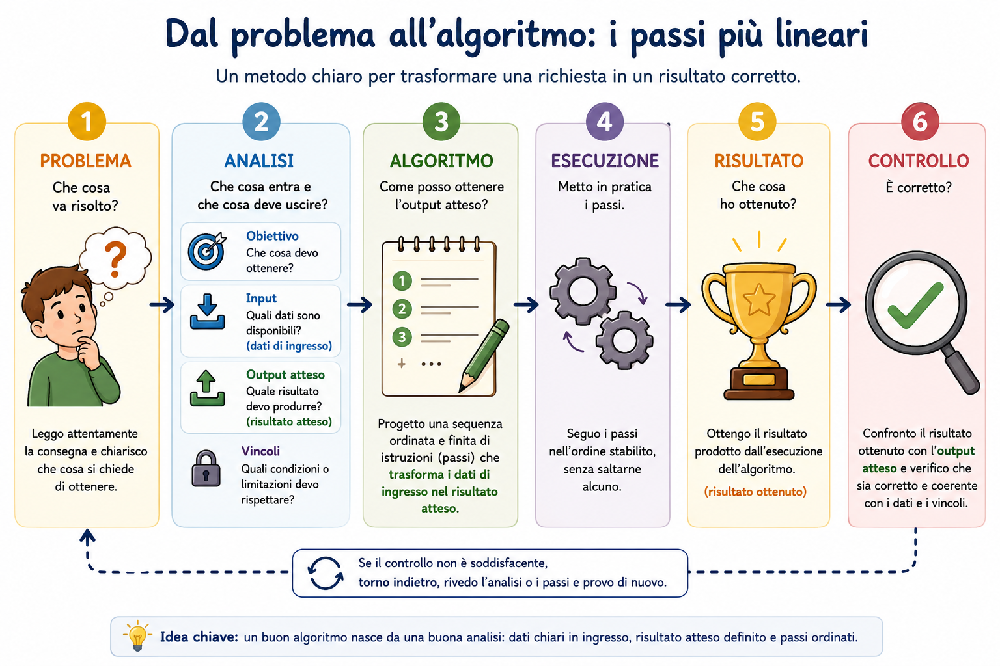

Prima di iniziare: dati e informazioni
Nel primo anno hai imparato che un dato è un elemento grezzo, mentre un'informazione è un dato interpretato in un contesto. Per esempio, «4» da solo è un dato; «servono 4 biglietti» è un'informazione utile.
Quando affrontiamo un problema dobbiamo riconoscere le informazioni disponibili, capire quali sono utili e collegarle a ciò che vogliamo ottenere. Questo richiamo è il punto di partenza per trasformare una richiesta in un procedimento ordinato.
Obiettivi della lezione
Al termine dovrai saper analizzare un problema semplice e presentare a voce la soluzione.
Situazione iniziale: consegnare un compito
Hai terminato una relazione e devi consegnarla sulla piattaforma scolastica entro le 18:00, in formato PDF e con il nome indicato dal docente. Fare subito clic su «Consegna» non basta: prima devi capire la richiesta.
Che cosa ottenere?
Una consegna corretta e visibile al docente.
Quali sono gli input?
Il documento, le credenziali e le istruzioni.
Quali limiti?
Scadenza, formato e nome del file.
Quali azioni?
Preparare, caricare, eseguire la consegna e controllare.
Questa situazione mostra l'idea centrale della lezione: prima di agire, analizziamo il problema.
Problema, soluzione e algoritmo
Partiamo dall'esempio concreto e diamo un nome ai tre elementi principali.
Problema
Descrive una situazione da risolvere e ciò che deve essere ottenuto.
Soluzione
È il modo scelto per affrontare il problema.
Algoritmo
È una sequenza ordinata e finita di istruzioni che descrive come trasformare i dati di ingresso nel risultato atteso.
Durante l'analisi distinguiamo i dati di ingresso (input) dal risultato che vogliamo ottenere, chiamato risultato atteso (output). L'algoritmo descrive i passi necessari per trasformare gli input nell'output atteso. L'esecuzione produce un risultato ottenuto, che deve poi essere controllato.

Come deve essere un buon algoritmo
Una semplice lista di frasi non è sufficiente. Il procedimento deve avere caratteristiche precise.
Ordinato
I passi sono nella successione corretta.
Finito
Termina dopo un numero limitato di passi.
Comprensibile
Chi lo legge capisce che cosa deve fare.
Non ambiguo
Ogni istruzione ha un significato preciso.
Eseguibile
Le azioni possono essere svolte con i mezzi disponibili.
Efficace
Conduce al risultato previsto quando viene eseguito correttamente.
Gli elementi da individuare
Per analizzare un problema usa cinque domande-guida.
Obiettivo
Lo scopo da raggiungere.
Domanda: Che cosa devo ottenere?
Dati di ingresso (input)
Le informazioni disponibili all'inizio e necessarie per affrontare il problema.
Domanda: Quali dati conosco o ricevo?
Risultato atteso (output)
Ciò che la soluzione deve produrre o comunicare.
Domanda: Quale risultato deve uscire dal procedimento?
Vincoli
Le condizioni e i limiti che devono essere rispettati.
Domanda: Quali condizioni devo rispettare?
Passi
Le azioni necessarie, espresse nella successione corretta.
Domanda: Come trasformo i dati di ingresso nel risultato atteso?
Primo esempio guidato: consegnare il compito
- Problema
- Consegnare correttamente la relazione sulla piattaforma.
- Obiettivo
- Fare in modo che il docente riceva il file richiesto entro la scadenza.
- Dati di ingresso (input)
- Relazione completata, istruzioni, credenziali e orario di scadenza.
- Output atteso
- Consegna registrata con il file corretto.
- Vincoli
- Formato PDF, nome richiesto, dimensione accettata e consegna entro le 18:00.
Passi ordinati in linguaggio naturale
- Rileggi le istruzioni.
Controlla formato, nome e scadenza.
- Apri la relazione.
Verifica che il contenuto sia completo.
- Prepara il file.
Salvalo in PDF con il nome richiesto.
- Accedi alla piattaforma.
Apri l'attività indicata dal docente.
- Carica e consegna.
Seleziona il file corretto e conferma.
- Esegui e osserva il risultato.
La conferma visualizzata dopo l'invio è il risultato ottenuto.
- Controlla.
Confronta la conferma, il nome del file e l'orario con l'output atteso e con i vincoli.
Controllo finale: il risultato ottenuto coincide con l'output atteso? Il file visualizzato è corretto e la consegna risulta registrata prima delle 18:00?
Secondo esempio guidato: il costo dei biglietti
Situazione: per una visita servono 4 biglietti uguali. Ogni biglietto costa 7 euro. Quanto si spende in totale?
- Individua gli input.
Servono 4 biglietti e ciascuno costa 7 euro.
- Definisci l'output atteso.
Occorre ottenere il costo complessivo.
- Scegli l'operazione.
Moltiplica il numero di biglietti per il costo unitario.
- Esegui il calcolo.
4 × 7 = 28. La moltiplicazione equivale all'addizione ripetuta 7 + 7 + 7 + 7.
- Comunica il risultato ottenuto.
La spesa complessiva è di 28 euro.
- Controlla.
Verifica che 28 euro sia plausibile e che il risultato abbia l'unità di misura.
L'ordine delle istruzioni conta
Se provi a caricare la relazione prima di convertirla in PDF, potresti scegliere il file sbagliato. Se comunichi il costo prima di fare il calcolo, non hai ancora un risultato. Cambiare l'ordine può rendere il procedimento inefficace.
Istruzioni ambigue o incomplete
Un'istruzione ambigua permette interpretazioni diverse; un'istruzione incompleta non fornisce ciò che serve per agire.
«Sistema il file nel posto giusto»
Problema: non indica quale file né quale cartella.
Più precisa: «Sposta il file relazione.pdf nella cartella Consegna».
«Fai il calcolo necessario»
Problema: non specifica quali valori usare né che cosa calcolare.
Più precisa: «Considera quattro volte il costo di 7 euro».
«Ripeti alcune volte»
Problema: «alcune» non stabilisce quante volte.
Più precisa: «Esegui il controllo tre volte».
«Usa un numero abbastanza grande»
Problema: persone diverse possono scegliere numeri diversi.
Più precisa: «Usa un numero maggiore di 100».
🧭 Attività guidata — Preparare lo zaino
Situazione: domani hai educazione fisica alla prima ora e devi preparare lo zaino questa sera.
- Problema.
Preparare tutto il necessario senza dimenticare oggetti.
- Obiettivo.
Avere uno zaino completo e pronto prima di andare a dormire.
- Dati di ingresso (input).
Orario scolastico, elenco del materiale e oggetti presenti in casa.
- Output atteso.
Uno zaino con libri, quaderni e materiale per educazione fisica.
- Vincoli.
Completa tu: quali limiti di tempo, spazio o disponibilità devi rispettare?
- Passi ordinati.
Scrivi quattro o cinque azioni, iniziando dal controllo dell'orario.
- Risultato ottenuto e controllo.
Osserva il contenuto dello zaino e confrontalo con l'output atteso, l'orario e l'elenco.
Apri un possibile completamento
Vincoli: preparare lo zaino entro sera, usare lo spazio disponibile e inserire soltanto il materiale necessario.
Passi: leggere l'orario; elencare il materiale; recuperare gli oggetti; inserirli nello zaino; confrontare il contenuto con l'elenco.
Attività autonome
Per ogni situazione individua gli elementi, ordina i passi, correggi le ambiguità e poi presenta la soluzione a voce.
1. Inviare una fotografia al docente
La fotografia deve essere leggibile, in formato JPG, nominata «cognome-attivita» e inviata entro domani.
- Individua problema, obiettivo, dati di ingresso, output atteso e vincoli.
- Scrivi cinque passi ordinati in linguaggio naturale.
- Sostituisci l'istruzione ambigua «manda la foto nel modo giusto».
- Spiega oralmente la soluzione in un minuto.
Controlla la tua analisi
Elementi: l'obiettivo è far ricevere una fotografia corretta; gli input sono fotografia, istruzioni e scadenza; l'output atteso è l'invio registrato con il file corretto; i vincoli sono leggibilità, formato, nome e tempo.
Passi possibili: scattare la foto; controllarne la leggibilità; salvarla in JPG; assegnare il nome richiesto; inviarla. La conferma è il risultato ottenuto, da confrontare con l'output atteso.
2. Acquistare quaderni uguali
Occorrono 5 quaderni. Ogni quaderno costa 3 euro. Quanto si spende?
- Individua problema, obiettivo, dati di ingresso, output atteso e vincoli.
- Descrivi in ordine il ragionamento e il controllo.
- Rendi precisa l'istruzione «fai il conto».
- Spiega oralmente la soluzione in un minuto.
Controlla la tua analisi
Gli input sono 5 quaderni e 3 euro ciascuno; l'output atteso è il costo complessivo. L'esecuzione del calcolo 5 × 3 produce il risultato ottenuto di 15 euro. Il controllo conferma che è plausibile perché cinque oggetti da 3 euro costano più di 3 euro e meno di 20.
Preparazione al colloquio orale
Rispondi prima con una frase chiara, poi aggiungi un esempio.
Che cos'è un problema?
È una situazione che richiede di raggiungere un obiettivo o trovare una risposta.
Qual è la differenza tra problema e soluzione?
Il problema descrive ciò che va risolto; la soluzione è il modo scelto per affrontarlo.
Che cosa fa l'algoritmo?
Descrive con istruzioni ordinate e finite come trasformare i dati di ingresso nell'output atteso.
Quali caratteristiche deve avere un buon algoritmo?
Deve essere ordinato, finito, comprensibile, non ambiguo, eseguibile e capace di condurre al risultato.
Che cosa sono i dati di ingresso o input?
Sono le informazioni disponibili all'inizio e necessarie per affrontare il problema.
Che cosa si intende per output atteso?
È il risultato che definiamo durante l'analisi e che la soluzione deve produrre o comunicare.
Qual è la differenza tra output atteso e risultato ottenuto?
L'output atteso viene definito prima dell'algoritmo; il risultato ottenuto compare dopo la sua esecuzione.
Che cosa sono i vincoli?
Sono condizioni e limiti che la soluzione deve rispettare.
Perché l'ordine delle istruzioni è importante?
Perché alcune azioni dipendono da quelle precedenti; un ordine errato può impedire il risultato.
Perché un'istruzione ambigua può causare errori?
Perché può essere interpretata in modi diversi e produrre azioni o risultati differenti.
A che cosa serve il controllo finale?
Serve a confrontare il risultato ottenuto con l'output atteso e a decidere se occorre rivedere l'analisi o i passi.
🧠 Autovalutazione finale
Prova a rispondere senza rileggere. Apri poi le indicazioni.
So distinguere problema, soluzione e algoritmo?
Se sai definirli e applicarli allo stesso esempio, l'obiettivo è raggiunto.
So riconoscere obiettivo, input, output atteso e vincoli?
Prova con una consegna scolastica nuova. Se trovi tutti e quattro gli elementi, l'obiettivo è raggiunto.
So scrivere passi ordinati e non ambigui?
Fai leggere i passi a un'altra persona: deve poterli eseguire senza chiedere chiarimenti.
So distinguere output atteso e risultato ottenuto?
Se sai collocarli rispettivamente prima della costruzione dell'algoritmo e dopo l'esecuzione, la distinzione è chiara.
So presentare l'analisi a voce?
Se riesci a seguire la traccia in uno o due minuti senza leggere un testo completo, sei pronto.
Riepilogo finale
🎒 Lo zaino dello studente
Le idee essenziali da portare al colloquio orale.
✅ Sintesi
- Un problema presenta un obiettivo da raggiungere.
- L'analisi individua input, output atteso e vincoli.
- L'algoritmo descrive una sequenza ordinata e finita di istruzioni.
- L'esecuzione produce un risultato ottenuto.
- Il controllo confronta il risultato ottenuto con l'output atteso.
- Se il controllo fallisce, si rivedono l'analisi o i passi.
📝 Parole chiave
- problema
- obiettivo
- input
- output atteso
- vincoli
- algoritmo
- esecuzione
- risultato ottenuto
- controllo
❓ Controllo rapido
- Qual è l'obiettivo?
- Quali input ricevo?
- Qual è l'output atteso?
- Quali vincoli rispetto?
- Quale risultato produce l'esecuzione?
- Il risultato ottenuto coincide con l'output atteso?
🎤 Ripasso in 2 minuti
Scegli un problema quotidiano, individua i suoi elementi e racconta i passi senza usare frasi ambigue.